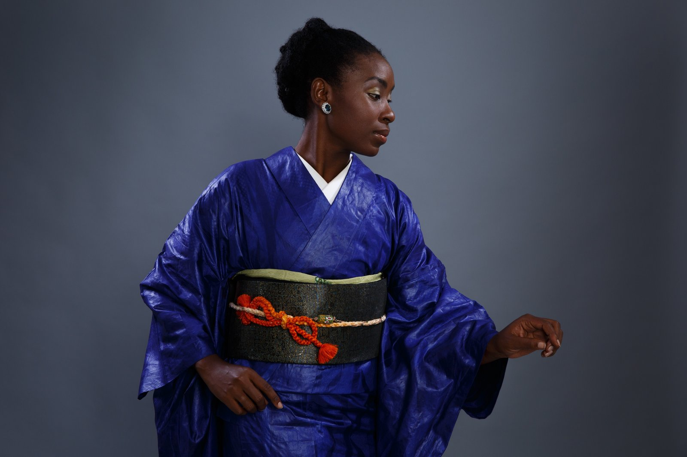
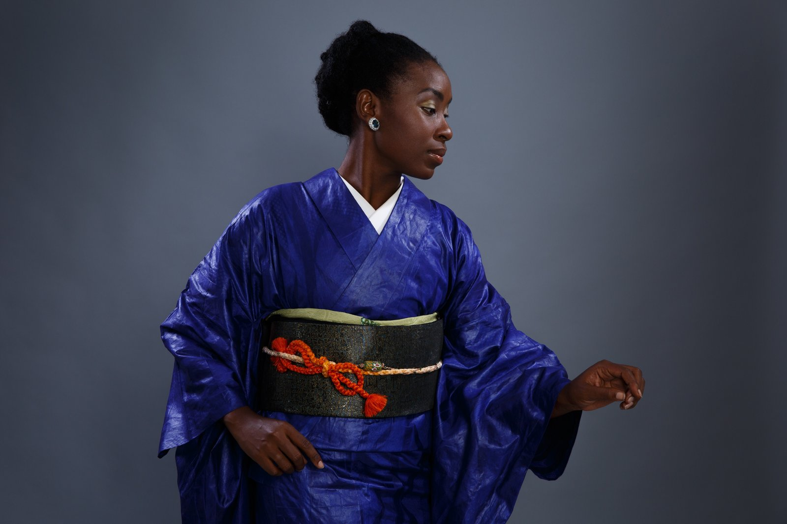

Senanu Kimono
Senanu is Dr. Dédé’s bespoke kimono brand where Japanese craft meets African aesthetics. Each piece blends silk and wax‑print fabrics, honouring the intertwined histories of two cultures while creating something entirely new. During the journey you’ll have the opportunity to wear an exclusive Senanu yukata or kimono designed just for you.
Guests in the VIP Sanctuary tier receive a custom Senanu yukata as part of their welcome gift. Travellers in other tiers can purchase a piece à la carte to commemorate their experience. Imagine a circle of Black women draped in vibrant textiles, sipping tea and walking temple paths—embodying both heritage and future.

 

Follow Senanu on Facebook and Instagram to see more Afro‑Japanese designs and behind‑the‑scenes moments.